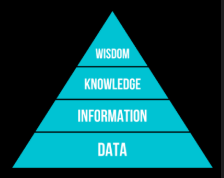

INTEGRAÇÃO E EVOLUÇÃO DE SISTEMAS DE INFORMAÇÃO¶
Sistemas de Informação¶
Um Sistema de Informação (SI) é um conjunto de componentes inter-relacionados que coletam, processam, armazenam e distribuem informações para apoiar a tomada de decisões e o controle em uma organização. Seu valor está em transformar dados brutos em valor estratégico para o negócio.
A pirâmide DIKW¶
Os SI são o motor que movimenta a pirâmide DIKW — um modelo que representa a progressão hierárquica da informação, desde o dado bruto até a sabedoria aplicada:
Diagrama da pirâmide

| Nível | Significado |
|---|---|
| Data (Dado) | Elementos brutos, sem contexto. |
| Information (Informação) | Dados organizados e contextualizados. |
| Knowledge (Conhecimento) | Interpretação da informação para a tomada de decisão — saber como usar a informação adequadamente. |
| Wisdom (Sabedoria) | Uso consciente do conhecimento, baseado em experiência, ética e visão estratégica. |
Sistemas abertos e fechados¶
Um sistema, de forma geral, é uma coleção de componentes que interagem entre si e que, coletivamente, podem ser vistos como algo que trabalha em direção a um objetivo comum. Classificam-se em:
- Sistemas fechados: não interagem além de suas próprias fronteiras;
- Sistemas abertos: interagem ativamente com o ambiente ao seu redor.
Esquematicamente, todo sistema aberto tem essa forma: um fluxo de entrada atravessa a fronteira do sistema, passa por etapas de processamento internas, gera um feedback que realimenta o próprio processamento, e produz um fluxo de saída que cruza a fronteira de volta para o ambiente.
Diagrama de um sistema aberto genérico

Os SI são, por definição, exemplos de sistemas abertos — são estabelecidos para servir à estratégia geral de uma organização, ajudando-a a cumprir seus objetivos no contexto de um ambiente externo em constante mudança.
Nem todo SI é digital
Um Sistema de Informação não precisa necessariamente envolver computadores — um sistema de fichas de papel em uma biblioteca também é um SI. O que nos interessa aqui, especificamente, é o SI baseado em computador, composto por:
- Componentes de Tecnologia da Informação: hardware, software, banco de dados e rede;
- Procedimentos/processos;
- Pessoas.
Diagrama de referência

Tecnologia da Informação vs. Sistema de Informação¶
É importante não confundir os dois termos:
- TI (Tecnologia da Informação): refere-se a qualquer ferramenta baseada em computador que as pessoas usam para trabalhar com informação, apoiando as necessidades de processamento de informação de uma organização.
- SI (Sistema de Informação): coleta, processa, armazena, analisa e dissemina informações para um fim específico — a TI é o conjunto de ferramentas; o SI é a solução organizacional construída sobre essas ferramentas.
Infraestrutura de TI em um SI é composta por seis componentes: hardware, software, redes, bancos de dados, pessoas e serviços.
Evolução da infraestrutura de TI¶
A infraestrutura de TI evoluiu por sucessivas eras: mainframe → computador pessoal → modelo client/server → enterprise computing → cloud e mobile computing. Essa evolução foi impulsionada por forças econômicas e tecnológicas bem definidas:
Leis que impulsionaram a evolução
- Custo de hardware (processamento) — Lei de Moore: o poder de processamento dobra a cada dois anos.
- Custo de hardware (armazenamento) — Law of Mass Digital Storage: o número de kilobytes que podem ser armazenados ao custo de 1 dólar dobra a cada 15 meses.
- Redução dos custos de comunicação — Lei de Metcalfe: o valor de uma rede é proporcional ao quadrado do seu número de nós.
O ecossistema de infraestrutura de TI é formado por sete categorias de fornecedores que se interligam: plataformas de hardware de computador (ex.: Dell, IBM, Sun, HP, Apple, máquinas Linux), plataformas de sistemas operacionais (ex.: Microsoft Windows, Unix, Linux, Mac OS X, Google Chrome), aplicações de software empresarial — incluindo middleware (ex.: SAP, Oracle, Microsoft, BEA), gerenciamento e armazenamento de dados (ex.: IBM DB2, Oracle, SQL Server, Sybase, MySQL, EMC Systems), plataformas de internet (ex.: Apache, Microsoft IIS/.NET, Unix, Cisco, Java), redes e telecomunicações (ex.: Microsoft Windows Server, Linux, Novell, Cisco, Alcatel-Lucent, Nortel, AT&T, Verizon) e consultores/integradores de sistemas (ex.: IBM, EDS, Accenture).
Diagrama do ecossistema de infraestrutura de TI

Tendências (2012)
- Hardware: The Emerging Mobile Digital Platform; Grid Computing; Virtualization; Cloud Computing; Green Computing; Autonomic Computing; High-Performance and Power-Saving Processors.
- Software: Linux and Open Source Software; Software for the Web (Java and Ajax); Web Services and Service-Oriented Architecture; Software Outsourcing and Cloud Services.
Imagens de referência (listas de tendências)


Diamante de Leavitt¶
O Diamante de Leavitt é um modelo de análise organizacional que ajuda a entender como diferentes elementos de uma organização estão interligados, trazendo uma visão sistêmica do negócio:
Diagrama do Diamante de Leavitt

| Elemento | Pergunta que responde |
|---|---|
| Task (Tarefa) | O que precisa ser feito para atingir os objetivos da organização? |
| People (Pessoas) | Quem executa as tarefas? |
| Technology (Tecnologia) | Quais ferramentas e sistemas são usados para realizar as tarefas? |
| Structure (Estrutura) | Como a organização se organiza para coordenar pessoas e tarefas? |
O SI se relaciona com todos os vértices do diamante, mas principalmente com o da tecnologia:
- é a tecnologia organizacional central, automatizando tarefas, armazenando dados, apoiando decisões e conectando setores;
- redesenha processos, transformando atividades manuais em práticas guiadas por dados;
- muda a forma como as pessoas trabalham, exigindo novas competências e alterando papéis e relações;
- pode descentralizar decisões, eliminando camadas hierárquicas — ou, ao contrário, exigir a criação de novas unidades organizacionais.
Tipos de SI¶
A escolha de qual tipo de SI usar depende bastante do setor, e vários tipos podem coexistir na mesma organização:
| Sigla | Nome | Função |
|---|---|---|
| EIS | Executive Information Systems | Oferece visão global e estratégica da organização para a alta direção. |
| DSS | Decision Support Systems | Ajuda a tomar decisões não-estruturadas ou semi-estruturadas, com uso de modelos e simulações. |
| ERP | Enterprise Resource Planning | Integra todos os processos da empresa em um único sistema. |
| CRM | Customer Relationship Management | Gerencia o ciclo de vida do cliente, melhorando o relacionamento. |
| SCM | Supply Chain Management | Gerencia o fluxo de materiais e informações da cadeia logística. |
| MIS | Management Information Systems | Gera relatórios a partir dos dados de sistemas transacionais (TPS — Transaction Processing Systems) para apoiar o gerenciamento. |
Lei de Conway
A forma como as pessoas e equipes se comunicam dentro da empresa se reflete diretamente na estrutura do sistema construído — equipes fragmentadas tendem a produzir sistemas fragmentados, e vice-versa.
SMACIT¶
SMACIT é o conjunto de tecnologias que vêm transformando a forma como as empresas operam:
- Social — uso de mídias sociais e plataformas de comunicação para interagir com clientes e construir comunidades;
- Mobile — uso de dispositivos móveis para acessar informações e serviços da empresa;
- Analytics — coleta, análise e interpretação de dados para entender comportamento de clientes, tendências de mercado e outros aspectos do negócio;
- Cloud Computing — uso de serviços em nuvem para armazenar dados, hospedar aplicações e outros recursos;
- Internet of Things — conexão de dispositivos físicos à internet para coletar e transmitir dados, permitindo automação e controle remoto.
Fatores críticos de sucesso na implantação de ERPs¶
Implantar um ERP é um dos projetos de TI mais arriscados e caros que uma organização pode empreender — a literatura identifica vários fatores críticos de sucesso:
- Composição e trabalho em equipe. Definir uma equipe multidisciplinar: gerente de projeto, usuários-chave, especialistas de TI e consultores do parceiro de implementação.
- Apoio da alta gestão. Comunicar a importância do projeto para toda a empresa; definir a visão estratégica para o ERP; resolver conflitos entre departamentos; garantir que os melhores funcionários participem do projeto.
- Plano de negócios e visão. O plano define os benefícios esperados em termos mensuráveis (KPIs); a visão garante que todos entendam o objetivo como algo transformador, não apenas uma troca de software.
- Comunicação efetiva. Presente durante todo o projeto, com o objetivo de manter todos informados, gerenciar expectativas sobre o que o sistema pode (e não pode) fazer, reduzir medo e resistência, e coletar feedback continuamente.
- Gestão de projeto. Controlar escopo, tempo, custo, qualidade, riscos e recursos.
- Defensor do projeto (champion). Uma figura específica que serve como ponto focal da mudança, ajudando a superar barreiras políticas e culturais, construindo apoio em todos os níveis da organização, e servindo de exemplo de otimismo e comprometimento com o novo sistema.
- Sistemas legados e de negócio adequados. Fazer um inventário e análise profunda dos sistemas existentes: entender o que funciona bem e o que é problemático; decidir quais sistemas serão substituídos pelo ERP e quais precisam ser integrados a ele; planejar como os dados legados serão limpos e migrados.
- Programa de gestão da mudança e cultura. Estruturar um programa que vá além de comunicação e treinamento: análise de impacto (como a mudança afeta cada cargo/departamento), mapeamento cultural (o que facilita ou dificulta a adoção) e um plano de ação concreto para mitigar resistências.
- Redesenho de processos (BPR) e mínima customização. A empresa deve adaptar seus processos às melhores práticas já embutidas no ERP, em vez de customizar o software para replicar processos antigos — cada alteração no código-fonte do ERP gera custo, complexidade, dificulta atualizações futuras e aumenta o risco de bugs; customizar apenas quando for absolutamente essencial para uma vantagem competitiva real.
- Desenvolvimento, teste e solução de problemas de software. A fase técnica mais intensa: desenvolvimento/configuração (ajustar o sistema aos processos definidos), testes (unitários, de integração — para ver se os módulos conversam entre si — e o UAT, User Acceptance Testing, onde usuários-chave validam o sistema em cenários reais), e um processo claro de troubleshooting para identificar, priorizar e corrigir erros.
- Monitoramento e avaliação do desempenho. Crucial após a implementação: monitorar o desempenho técnico (velocidade, estabilidade), avaliar se os KPIs do plano de negócios estão sendo alcançados, e coletar feedback dos usuários para identificar necessidades de treinamento adicional ou pequenos ajustes — garantindo que o investimento realmente traga o retorno esperado.
Processos de Negócio¶
Um processo de negócio é um conjunto de atividades ou tarefas estruturadas e relacionadas que produzem um serviço ou produto específico para seus clientes. É parte central dos SI, já que estes suportam, viabilizam e integram os processos de negócio da organização.
Elementos básicos de um processo:
| Elemento | Descrição |
|---|---|
| Entrada | Insumos, materiais, serviços e informações que fluem e são transformados pelas atividades do processo. |
| Recursos | Pessoas e equipamentos que realizam as atividades. |
| Saída | O produto ou serviço criado pelo processo. |
Se o processo envolve um cliente, esse cliente pode ser interno (ex.: um gerente que recebe um relatório interno) ou externo (ex.: um indivíduo ou empresa que adquire os produtos da organização, cliente de um processo de atendimento).
Tipos de processos¶
| Tipo | Característica | Exemplo |
|---|---|---|
| Primários (ou centrais) | Mais operacionais, diretamente ligados à missão da organização. | Processos ligados a vendas. |
| De suporte (ou habilitadores) | Apoiam os processos primários. | Processos ligados a atividades de RH. |
| De gerenciamento (ou governança) | Medem/monitoram atividades da organização, auxiliando em políticas e diretrizes. | Processos ligados a planejamento estratégico. |
Gerentes precisam prestar atenção especial aos processos de negócio, pois eles determinam o quão bem a organização executa seus negócios — e podem se tornar uma vantagem estratégica real. Algumas métricas de eficiência comuns: tempo para concluir o processo, satisfação do cliente, taxa de erros na entrada de dados, e disponibilidade de recursos.
Process Mining¶
Process Mining é uma abordagem que combina técnicas de ciência de dados com gestão de processos, para descobrir, monitorar e melhorar processos de negócio com base em dados extraídos diretamente dos sistemas de informação — revelando como os processos realmente ocorrem na prática (e não como deveriam, segundo o modelo teórico).
| Tipo | Função |
|---|---|
| Discovery | Reconstrói o processo real a partir dos logs de eventos, sem necessidade de um modelo prévio. |
| Conformance Checking | Compara o processo real com o modelo esperado, mostrando desvios. |
| Enhancement | Usa dados reais para ajustar e melhorar o modelo de processo existente. |
KPI (Key Performance Indicator)¶
Um KPI é um indicador-chave que mostra o quão bem um processo está atingindo seus objetivos — auxiliando a monitorar performance, identificar gargalos, embasar decisões e validar o impacto de melhorias implementadas. Exemplos comuns: CSAT, ROI, NPS.
KPIs devem ser SMART
Specific (específicos), Measurable (mensuráveis), Achievable (atingíveis), Relevant (relevantes) e Time-bound (com prazo definido).
Abordagens de gestão e melhoria de processos¶
O objetivo geral é redesenhar processos de negócio para serem mais eficientes, reduzir custos e melhorar a qualidade. Existem três abordagens complementares:
BPR (Business Process Reengineering). Uma estratégia para tornar os processos de negócio de uma organização mais produtivos e lucrativos, determinando como eles podem ser reconstruídos do zero para melhorar suas funções. É, normalmente, uma estratégia radical dentro da organização.
BPI (Business Process Improvement). Um conjunto de métodos e ferramentas para identificar ineficiências e otimizar processos já existentes (mais incremental que o BPR). Técnicas usadas:
| Técnica | Foco |
|---|---|
| PDCA (Plan-Do-Check-Act) | Ciclo genérico de melhoria contínua. |
| DMADV (Define, Measure, Analyze, Design, Verify) | Criar novos produtos e processos. |
| DMAIC (Define, Measure, Analyze, Improve, Control) | Melhorar processos de negócio já existentes. |
BPM (Business Process Management). Uma abordagem sistemática para modelar, analisar, melhorar, automatizar e monitorar processos de negócio — ajuda a sustentar os esforços do BPI ao longo do tempo, em vez de ser um projeto único.
BPMN (Business Process Model and Notation)¶
O BPMN é uma linguagem padronizada para modelagem de processos de negócio, facilitando a comunicação entre analistas, desenvolvedores e gestores. Seus principais elementos:
Activities (ações realizadas no processo):
- Tasks: passos simples e indivisíveis (ex.: "edit order");
- Subprocessos: representam um conjunto de tarefas colapsadas em um único elemento, identificado por um pequeno "+" no retângulo (ex.: "procure goods").
Exemplo de processo BPMN (pedido com procurement)
Um exemplo típico: o processo começa com o evento Order Received; segue para a task Check Availability; um gateway exclusivo (XOR) verifica se o artigo está disponível — se sim, vai direto para Ship Article e depois Financial Settlement (um subprocesso), terminando em Payment Received; se não, entra no subprocesso Procurement, que pode terminar em Undelivered (via evento intermediário de erro) ou Late Delivery (via evento intermediário de timer) — ambos os casos acionam a task Inform Customer, e o caminho de entrega atrasada ainda segue para Remove Article from Catalogue, terminando em Article Removed.


Events (pontos de entrada, interrupção ou saída):
- Start events: iniciam a instância do processo;
- Intermediate events: representam marcos ou condições intermediárias;
- End events: encerram o processo.
Gateways (controles do fluxo de decisão):
| Tipo | Comportamento |
|---|---|
| Exclusive (XOR) | Apenas uma única saída é escolhida. |
| Inclusive (OR) | Uma ou mais saídas podem ser tomadas. |
| Parallel (AND) | Todas as saídas são ativadas simultaneamente. |
| Event-based | O processo continua pelo primeiro evento que ocorrer. |
Connecting Objects (conectam os elementos do processo entre si):
- Sequence flow: fluxo de sequência entre tarefas, gateways e eventos;
- Message flow: comunicação entre pools;
- Association: liga dados ou artefatos a atividades.
Artefatos (fornecem dados e informações de apoio, como complementos de informação):
- Data objects: representam arquivos ou documentos usados/gerados pelo processo;
- IT Systems: representam sistemas que executam tarefas automatizadas;
- Comentário/Nota: pode ser associado a qualquer elemento via uma association.
Swimlanes (organização por responsabilidades, mostrando quem é responsável por cada parte do processo):
- Pools: representam entidades organizacionais inteiras;
- Lanes: representam grupos ou papéis específicos dentro de uma pool.
Ícones de notação BPMN (Events, Gateways, Connecting Objects, Artifacts, Swimlanes)


Cloud Computing¶
Cloud Computing é a entrega de serviços de computação pela internet. Suas duas propriedades centrais são a escalabilidade e a elasticidade: recursos podem ser ampliados ou reduzidos de forma inteligente conforme a demanda — envolvendo monitoramento contínuo e provisionamento automático —, e o contratante paga apenas pelo que efetivamente utiliza.
Virtualização¶
A virtualização é o motor do Cloud Computing: permite que um único computador físico se comporte como vários computadores virtuais independentes, sendo o próprio motivo pelo qual a nuvem consegue ser escalável e elástica.
| Máquina Virtual (VM) | Container | |
|---|---|---|
| Nível de virtualização | Hardware — cria uma máquina completa e virtual. | Sistema operacional. |
| O que precisa instalar | Um SO completo (com drivers e arquivos), e só então a aplicação com suas dependências. | Apenas as dependências e bibliotecas da própria aplicação. |
| Peso/velocidade | Alta demora, pesada. | Leve e rápida — melhora bastante a eficiência. |
| Portabilidade | Limitada ao hypervisor. | Alta — roda em qualquer ambiente (cloud, local, servidor próprio), compartilhando o mesmo SO entre containers. |
| Exemplo | VMware, VirtualBox | Docker |
Containers permitem empacotar aplicações junto com suas dependências, garantindo execução consistente em qualquer ambiente — e são altamente compartilháveis entre si.
Modelos de implantação (deployment) de cloud¶
| Modelo | Característica |
|---|---|
| Public | Infraestrutura oferecida por terceiros via internet; alta escalabilidade e pagamento conforme uso; recursos compartilhados entre clientes (ex.: AWS, Azure, Google Cloud). |
| Private | Infraestrutura exclusiva de uma organização, hospedada internamente (on-premise) ou por terceiros; maior controle, segurança e personalização; ideal para dados sensíveis e ambientes regulados. |
| Hybrid | Combina o melhor dos dois mundos: a flexibilidade/personalização do modelo privado com a otimização e eficiência do modelo público. |
Cloud Bursting
Uma forma comum de implementar o modelo híbrido é o Cloud Bursting: uma configuração da aplicação que permite que a nuvem privada "rompa" para a nuvem pública quando precisa de recursos computacionais adicionais, sem interrupção do serviço. Isso combina maior poder computacional sob demanda com a proteção dos dados privados — mantendo a segurança e a conformidade regulatória (como a LGPD).
Modelos de serviço¶
| Modelo | O que inclui | Quem gerencia o quê | Exemplos |
|---|---|---|---|
| IaaS (Infrastructure as a Service) | VMs, redes e armazenamento — infraestrutura de TI básica sob demanda. | O provedor gerencia apenas hardware e virtualização; o usuário gerencia SO, armazenamento, aplicações, etc. — maior controle para o usuário. | Amazon EC2, Azure VMs, Google Compute Engine |
| PaaS (Platform as a Service) | Linguagem de programação, banco de dados, etc. — uma plataforma completa para desenvolvimento e implantação. | O provedor gerencia, além de HW e virtualização, também o SO e os logs; o usuário foca exclusivamente no desenvolvimento. | Google App Engine, Heroku, Azure App Services |
| SaaS (Software as a Service) | O software em si, acessado via internet. | O provedor gerencia praticamente tudo; o usuário gerencia apenas seus dados e configurações — menos controle geral, mas uso muito mais simples. | Gmail, Microsoft 365, Salesforce |
A tabela acima mostra apenas três modelos, mas a divisão de responsabilidades entre contratante e provedor é, na prática, um espectro mais granular. Considerando as camadas de uma aplicação (dados/configurações, código da aplicação, escalonamento, runtime, SO, virtualização e hardware), quem gerencia cada camada varia conforme o modelo:
| Camada | On-Premises | IaaS | CaaS (Containers) | PaaS | FaaS (Function) | SaaS |
|---|---|---|---|---|---|---|
| Dados e configurações | Você | Você | Você | Você | Você | Você |
| Código da aplicação | Você | Você | Você | Você | Você | Provedor |
| Escalonamento | Você | Você | Você | Você | Provedor | Provedor |
| Runtime | Você | Você | Você | Provedor | Provedor | Provedor |
| Sistema operacional | Você | Você | Provedor | Provedor | Provedor | Provedor |
| Virtualização | Você | Provedor | Provedor | Provedor | Provedor | Provedor |
| Hardware | Você | Provedor | Provedor | Provedor | Provedor | Provedor |
Diagramas de referência (pirâmide SaaS/PaaS/IaaS e tabela de responsabilidades completa)


Segurança da Informação¶
Tríade CIA¶
A Tríade CIA descreve os pilares fundamentais para a proteção de dados, cruciais para garantir que as informações sejam acessadas apenas por pessoas autorizadas, mantenham sua precisão, e estejam acessíveis quando necessário.
| Pilar | Garantia |
|---|---|
| Confidencialidade (Confidentiality) | Evitar a divulgação não autorizada de informação — fornecendo acesso a quem tem permissão, e impedindo que outros saibam qualquer coisa sobre o conteúdo. |
| Integridade (Integrity) | A informação não é alterada de forma não autorizada. |
| Disponibilidade (Availability) | A informação é acessível e modificável em tempo hábil por aqueles autorizados a fazê-lo. |
Malwares (Malicious Software)¶
Malware é qualquer software projetado para causar danos ou realizar atividades maliciosas em sistemas de computador.
Insider Attacks ocorrem quando uma pessoa com acesso autorizado a um sistema (um funcionário ou parceiro) abusa desse acesso para causar danos à organização. Podem ser intencionais (visando prejudicar a empresa por motivos pessoais ou financeiros) ou acidentais (erros de configuração, falta de atenção). Dois mecanismos comuns:
- Backdoor: uma funcionalidade camuflada que permite ao usuário realizar ações normalmente não permitidas — geralmente envolvendo mecanismos de bypassing authentication.
- Logic Bomb: um programa que executa uma ação maliciosa quando condições específicas são atingidas, geralmente causando danos ou interrupções.
Os malwares também se classificam por como se propagam e como se ocultam:
| Categoria | Tipo | Comportamento |
|---|---|---|
| Propagação | Vírus | Se replica e se espalha anexando cópias de si mesmo a outros arquivos/programas. |
| Worm | Se replica e se espalha entre computadores, geralmente sem interação humana após a infecção inicial e sem precisar de um arquivo hospedeiro; na maioria das vezes carrega um payload malicioso. | |
| Ocultação | Rootkit | Projetado para ocultar a presença de um invasor no sistema, dando acesso contínuo e controle remoto; feito para se esconder tanto do software de segurança quanto do usuário. |
| Trojan | Se disfarça de programa legítimo para enganar usuários; precisa de interação do usuário para ser executado e causar dano. | |
| Botnet | Rede de dispositivos comprometidos, infectados com malware, controlada por um atacante (Botnet Controller) para realizar atividades maliciosas em larga escala. |
Integração¶
Integrar sistemas é conectar aplicações (muitas vezes legadas, construídas em épocas e com tecnologias diferentes) para que troquem dados e funcionalidades de forma consistente — um dos maiores desafios práticos da evolução de sistemas de informação em qualquer organização grande.
Teorema CAP¶
Em sistemas distribuídos, o Teorema CAP afirma que não é possível garantir simultaneamente as três propriedades a seguir:
Diagrama de Venn do Teorema CAP

| Propriedade | Garantia |
|---|---|
| Consistência | Todos os nós veem os mesmos dados ao mesmo tempo. |
| Availability (Disponibilidade) | Cada requisição recebe uma resposta, mesmo que algum nó esteja offline. |
| Partition tolerance (Tolerância à partição) | O sistema continua funcionando mesmo havendo falhas de comunicação entre nós (partição de rede). |
Na prática
Como falhas de rede são inevitáveis em sistemas distribuídos reais, a tolerância à partição é, em geral, obrigatória — o verdadeiro trade-off do CAP, na prática, é entre Consistência e Disponibilidade: sistemas CP sacrificam disponibilidade durante uma partição para manter consistência (ex.: bancos relacionais distribuídos tradicionais); sistemas AP sacrificam consistência imediata para continuar disponíveis (ex.: muitos bancos NoSQL, com consistência eventual).
Critérios para integração de aplicações¶
Ao desenhar uma integração entre sistemas, vários critérios concorrentes precisam ser balanceados:
- Acoplamento de aplicações: minimizar dependências — toda suposição implícita que uma integração carrega é um ponto que, se quebrado, quebra a aplicação inteira. A interface de integração deve ser específica o suficiente para implementar funcionalidade útil, mas genérica o suficiente para mudar quando necessário.
- Simplicidade da integração: minimizar as mudanças exigidas nas aplicações e a quantidade de código de integração necessário — mas é preciso balancear: a abordagem com menos código não necessariamente fornece a melhor integração a longo prazo.
- Tecnologia de integração: a necessidade de software (e, às vezes, hardware) específico para viabilizar a integração.
- Formato de dados: a necessidade de um formato comum entre os sistemas, mas que não seja excessivamente genérico (perdendo expressividade) nem excessivamente específico (perdendo interoperabilidade).
- Tempo de comunicação: a preocupação com o tempo entre o envio e a recepção dos dados. As aplicações devem ser informadas logo que os dados estiverem disponíveis para consumo, e deve existir também a notificação inversa — de quando os dados foram efetivamente consumidos. Quanto mais tempo o dado demora a ser consumido, maior a chance de ele ficar desatualizado.
- Dados vs. Funcionalidade: uma integração pode envolver não apenas dados, mas também o compartilhamento de funcionalidades inteiras — o que traz benefícios de reuso, mas também complica a lógica de invocação e pode ter impactos de execução e consequências adicionais para a integração.
- Assincronismo: aplicações são independentes, e idealmente não deveriam precisar esperar pela execução de outras — especialmente quando o outro lado da comunicação está indisponível. Uma aplicação pode simplesmente querer disponibilizar um dado para consumo posterior, via execuções em paralelo e notificações/callbacks na conclusão das operações.
Estilos de integração¶
Existem quatro estilos clássicos de integração entre aplicações, cada um com um trade-off diferente entre simplicidade, acoplamento e capacidades.
File Transfer. Uma aplicação escreve um arquivo (em um formato acordado) que outra aplicação posteriormente lê.
Diagrama: File Transfer

- Gera um acoplamento fraco entre os sistemas (eles nem precisam saber da existência um do outro diretamente, apenas do formato do arquivo);
- Tem desvantagens relacionadas a aspectos temporais — não há garantia de quando o arquivo será lido, nem notificação imediata de disponibilidade.
Shared Database. Múltiplas aplicações leem e escrevem diretamente no mesmo banco de dados.
Diagrama: Shared Database

- O gerenciamento de transações é garantido pelo próprio SGBD;
- Mas gera acoplamento forte no nível do schema: qualquer mudança na estrutura dos dados pode quebrar todas as aplicações que compartilham o banco.
Remote Procedure Invocation. Uma aplicação chama diretamente uma função/método exposto por outra, como se fosse uma chamada local.
Diagrama: Remote Procedure Invocation

- O acesso aos dados fica encapsulado atrás da interface da função (em vez de exposto diretamente, como no shared database);
- Passa a ser possível também expor funcionalidades, não apenas dados — mas isso introduz acoplamento temporal forte: ambos os lados precisam estar disponíveis simultaneamente para a chamada funcionar.
Messaging. As aplicações trocam mensagens assíncronas através de um canal intermediário (fila, tópico, barramento de mensagens).
Diagrama: Messaging

- O envio de mensagens não exige que todos os sistemas estejam funcionando ao mesmo tempo;
- Produz baixo acoplamento temporal — o receptor pode processar a mensagem quando estiver disponível;
- A comunicação assíncrona força os desenvolvedores a lidar com a realidade distribuída do sistema (falhas parciais, entregas fora de ordem, duplicação de mensagens), em vez de assumir uma ilusão de execução síncrona e confiável.
Padrões construídos sobre esses estilos
Na prática, arquiteturas de integração modernas combinam esses estilos básicos em padrões mais sofisticados:
- EAI (Enterprise Application Integration): uma camada central (muitas vezes um ESB — Enterprise Service Bus) que roteia, transforma e orquestra mensagens entre sistemas legados e novos, reduzindo o número de integrações ponto-a-ponto necessárias.
- API Gateway: um ponto único de entrada que expõe funcionalidades de múltiplos sistemas internos como APIs (tipicamente REST ou GraphQL) para consumidores externos, cuidando de autenticação, rate limiting e roteamento.
- SOA (Service-Oriented Architecture) e, mais recentemente, microsserviços: decompõem funcionalidades de negócio em serviços independentes, cada um dono dos seus próprios dados, comunicando-se via chamadas remotas (síncronas) ou mensageria (assíncrona) — levando os critérios de acoplamento, assincronismo e formato de dados discutidos acima ao centro das decisões arquiteturais de um sistema inteiro, não apenas de uma integração pontual.
Essa evolução — de monólitos fortemente acoplados a um banco compartilhado, para arquiteturas distribuídas de serviços fracamente acoplados — é, em grande medida, a própria história da evolução de sistemas de informação nas últimas duas décadas: cada nova geração de arquitetura tenta resolver os problemas de acoplamento, escalabilidade e manutenibilidade deixados pela geração anterior, geralmente ao custo de maior complexidade operacional (observabilidade, consistência eventual, versionamento de contratos entre serviços).